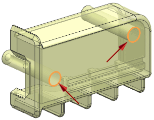
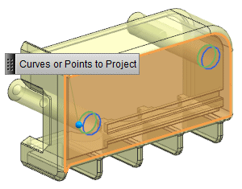
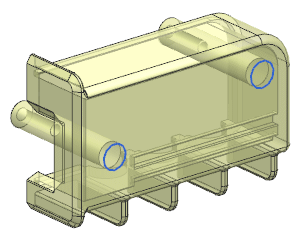

Create and locate the counterbore holes
In order to assemble the two halves, you will replace the mounting studs in the linked mirror part with a matching set of counterbore holes and add material to recess the alignment tabs.
-
Choose Edit→Object Display.
-
Select the solid body and click OK.
-
In the Edit Object Display dialog box, in the Shaded Display group, move the Translucency slider to 40.
-
Click OK.

If the Translucency Performance Warning dialog box is displayed, click OK.
-
Choose Insert→Curve from Curves→Project.
-
Select the two curves shown below.

-
In the Project Curve dialog box, in the Objects to Project To group, click Select Object
 .
.
-
Select the face shown below.

-
Click OK.
